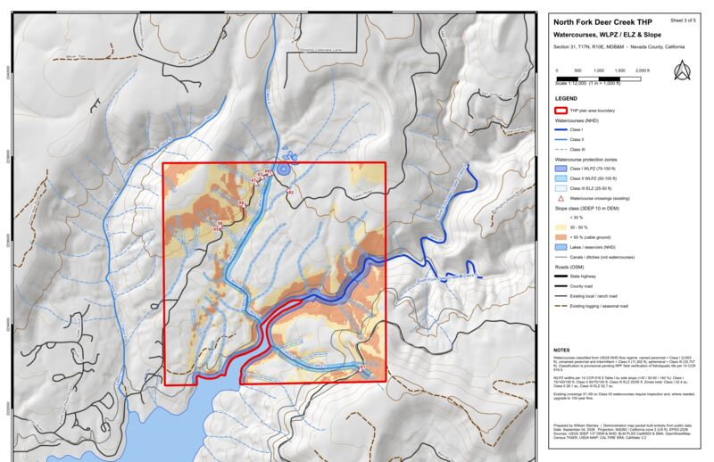
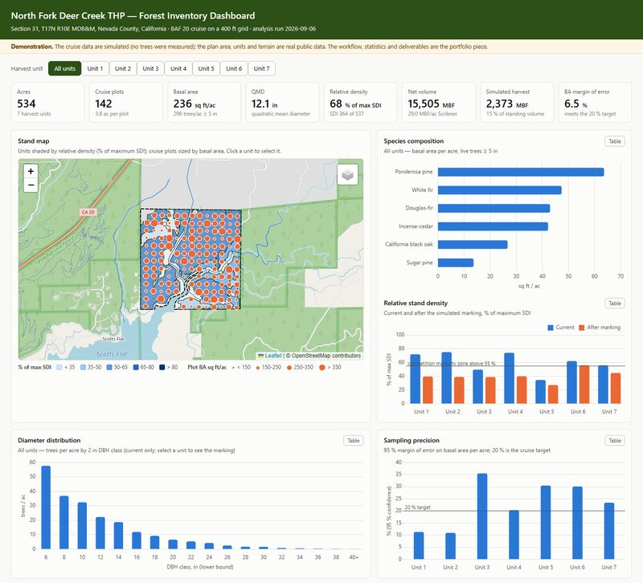
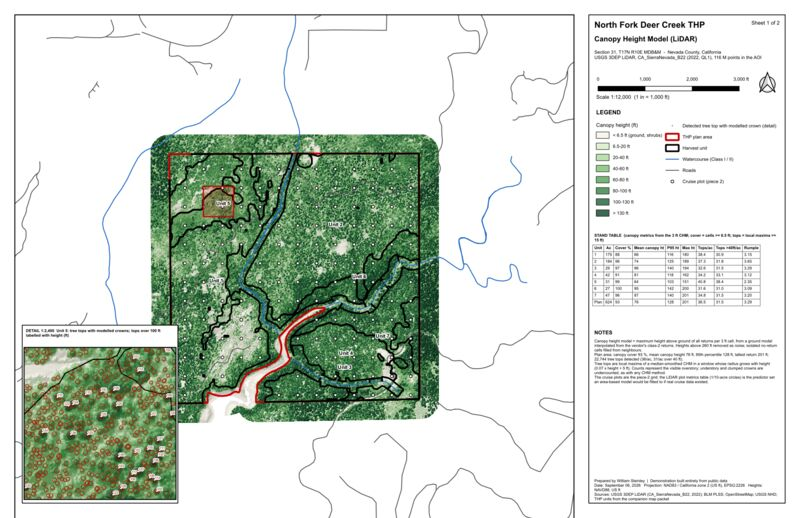

Professional Resume
Experienced GIS specialist and software developer with expertise in geospatial technologies, full-stack development, and innovative solutions for environmental and spatial data challenges.
Experience
Led timber cruise data analysis and built the GIS and reporting tools behind it for USFS Region 5 forest-health and fuels projects on the Plumas National Forest: stand metrics, cruise QC and sampling statistics, spatial data management, and map production.
Building web applications that integrate GIS technologies with modern web frameworks. Focus on Python, JavaScript, and database architecture.
Education & Certifications
Advanced training in GIS analysis, spatial databases, and geospatial software development.
Expertise in modern web technologies including PostgreSQL, Python, JavaScript, and API development.
GIS Projects & Initiatives
Forestry-focused geospatial work: map production for timber harvest planning, spatial databases, and data pipelines.

Timber Harvesting Plan Map Packet — North Fork Deer Creek
A five-sheet THP map set for a 624-acre private timberland section in Nevada County, California, built entirely from public data (USGS 3DEP and NHD, BLM PLSS and ownership, NAIP imagery, OpenStreetMap). Watercourses are classified from NHD flow regime and buffered per 14 CCR 916.5 by side slope; harvest units, landings and crossings are derived from slope, protection zones and the existing road network. The whole packet is reproducible from three Python scripts run through QGIS.
Demonstration project: no field work, watercourse classes and prescriptions are provisional. Not a proposal for the actual landowner.

Forest Inventory Analysis & Dashboard — North Fork Deer Creek
A full cruise-to-report workflow on the seven harvest units of the THP above: a BAF 20 cruise on a 400 ft grid (142 plots, 534 acres), field-data QC that catches six planted recording errors, stand metrics (basal area, QMD, summation-form SDI against the FVS Western Sierra maximum), Scribner volume, 95 % sampling statistics with plots-needed, and a simulated marking with pre/post structure and harvest volume. Cruise data are simulated and labeled as such; everything else is the real workflow.
Demonstration project: the cruise data are simulated; the plan area, units and terrain are real public data.

LiDAR Canopy Height & Stand Structure — North Fork Deer Creek
116 million points of USGS 3DEP LiDAR (2022, QL1) over the same section, processed with a streaming PDAL pipeline into a 3 ft canopy height model, then into tree tops (variable-window local maxima with modelled crowns), canopy cover, dominant height, tree-top density and rumple grids, and per-unit and per-plot structure metrics at the piece 2 cruise plots. Plan area: 93 % canopy cover, 95th-percentile height 128 ft, 22,744 tree tops detected. Everything here is measured from real data.
The LiDAR and every metric are real; the THP plan and units are the illustrative set from the map packet.
PostgreSQL-GIS Server Home Lab
A comprehensive geospatial database laboratory featuring PostgreSQL with PostGIS extensions. Designed for advanced spatial query testing, geometric computations, and development of GIS-enabled applications.
PICNIC-PURSUIT
An interactive application combining location-based services with recreational data analysis. Integrates mapping, geospatial queries, and data visualization for outdoor activity planning and discovery.
Forestry Knowledge Web Scraper
Python-based system for automated collection and aggregation of forestry data from multiple online sources. Demonstrates data pipeline development and geospatial data integration techniques.
Development Tools & Products
Software tools, frameworks, and products developed to enhance productivity and solve specific technical challenges.
ForestHub
Comprehensive platform for forestry data management and spatial analysis. Integrates multiple geospatial data sources with modern web technologies.
PlatformHexagents
Advanced agent-based system for distributed geospatial processing and analysis. Demonstrates modern approaches to handling complex spatial computations.
FrameworkMCP-Server-ArcGIS-Pro-AddIn
Integration module connecting Claude AI with ArcGIS Pro for intelligent geospatial analysis and automation. Bridges AI capabilities with professional GIS software.
IntegrationClaude Code Templates - Forestry
Curated collection of code templates and snippets for common forestry and GIS programming tasks. Accelerates development of geospatial solutions.
Code LibraryRight-Click Folder Tools
Utility suite for Windows file system integration. Provides quick access to common operations directly from Windows Explorer context menus.
UtilitySpatial Data Tools
Collection of command-line and scripted tools for geospatial data manipulation, transformation, and analysis at scale.
ToolsTechnical Skills & Expertise
GIS & Geospatial
Programming Languages
Database Technologies
Web Development
Development Tools
Data & Analysis
Get In Touch
I'm always interested in new opportunities, collaborations, and discussions about geospatial technology, GIS development, and innovative applications of spatial data.